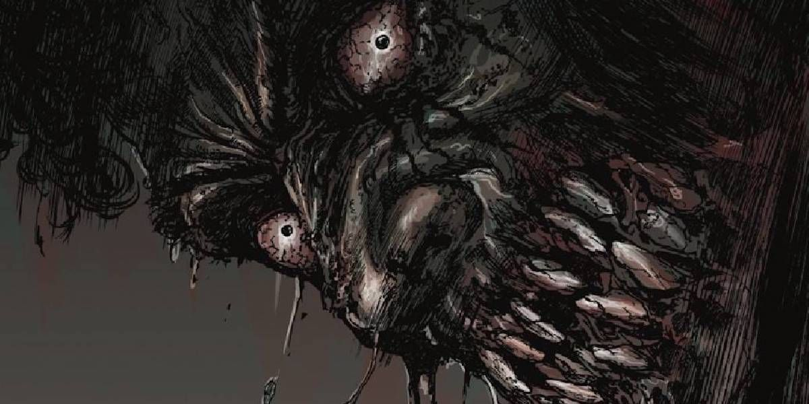

Rozhodl jses jít dopředu.
Na konci chodby vydíš světlo.
Cítíš zvláštní vůni ve větru.
Tvá žízeň se zhoršuje a začínáš být zoufalý.
Vyšel jsi schody a prošel dveřmi, které vedly ven z hrobky.
Nalézáš se na hřbitově.
Všiml jsis, že u jednoho hrobu truchlí vdova.
Příliš dlouho jsi nic nepil, příliš dlouho jsi necítil tu sladkou vůni krve.
Tvá žízeň tě přemohla a vrhnul ses na neznámou osobu.
Chuť jejího masa je tak strašně povědomá a vzpomínky se ti začnou valit do mozku.
V nehybných očích vdovy vidíš odraz sám sebe.
Jseš si jistý jenom jedním, tohle je důvod tvojí existence.
Žiješ a dýcháš jen proto, abys požíral a zabíjel.